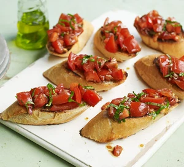
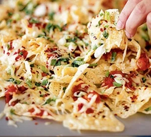

Recipe inspiration
Whether you're after an old favourite or inspiration for something new, we have the perfect recipe.
Appetizers are a great way to kick off any meal or gathering. They can be as simple as a bowl of nuts or as elaborate as a multi-tiered platter of sushi. Whatever your preference, appetizers are a tasty way to whet your appetite and set the tone for the rest of the meal.
Some popular options for appetizers include dips like guacamole, salsa, or spinach and artichoke; small bites like sliders, meatballs, or bruschetta; or finger foods like chicken wings, mozzarella sticks, or spring rolls. The options are endless and can be tailored to fit any dietary restriction or flavor preference.
Not only do appetizers provide a tasty start to the meal, they also give guests something to nibble on while they mingle and wait for the main course. So next time you're planning a dinner party or hosting a gathering, don't forget to include a few tasty appetizers on the menu!
Appetizers
Cooking Recipes
- vegetable oil, for the dish
- 300g chopped frozen spinach, defrosted
- 250g soft cheese
- 150ml soured cream
- 100g mayonnaise
- 2 large garlic cloves, finely grated
- 75g vegetarian hard cheese, grated
- 100g grated mozzarella
- 100g grated vegetarian cheddar
- 2 x 280g jars artichokes, drained and roughly chopped
- tortilla chips and crudités of your choice, to serve
Serve this moreish cheesy dip with tortilla chips, hunks of bread and crudités. It's perfect for a Christmas buffet or party
Method
STEP 1Heat the oven to 180C/160C fan/ gas 4. Lightly oil a small baking dish. Tip the defrosted spinach into a sieve set over the sink and press down with the back of a large spoon to remove as much liquid as possible. Set aside.
STEP 2
Whisk the soft cheese, soured cream and mayonnaise together in a medium bowl until well-combined. Add the garlic, most of the cheeses, all the spinach and the artichokes. Season with black pepper and fold everything together to combine.
STEP 3
Spoon the mixture into the baking dish and sprinkle over the remaining cheese. Will keep, covered in the fridge, for up to a day. Bake for 25-30 mins until bubbling and golden. If you like an extra-crisp top, flash under a hot grill for the final few minutes of cooking time. Leave to stand for 5 mins, then serve with tortilla chips and crudités.

- Ingredients
- ½ small red onion, finely chopped
- 8 medium tomatoes (about 500g), coarsely chopped and drained
- 2-3 garlic cloves, crushed
- 6-8 leaves of fresh basil, finely chopped
- 30ml balsamic vinegar
- 60-80ml extra virgin olive oil
- 1 loaf crusty bread
Make our simple tomato bruschetta as a classic Italian starter. Ideal for a summer gathering with friends, this easy dish is fresh, tasty and full of flavour
Method
STEP 1In a large bowl, mix the onions, tomatoes, garlic and basil, taking care not to mash or break up the tomatoes too much. Add the balsamic vinegar and extra virgin olive oil. Add salt and pepper to taste. Mix again. Cover and chill for at least an hour. This will allow the flavours to soak and blend together.
STEP 2Slice the baguette loaf diagonally into 12 thick slices and lightly toast them until they are light brown on both sides. Serve the mixture on the warm slices of bread. If you prefer the mixture at room temperature, remove from the fridge half an hour before serving.

- Ingredients
- 175g packet plain tortilla chips
- 225g jar salsa
- a few sliced spring onions
- a good chunk of cheese
- a pinch of crushed chilli flakes
- soured cream or guacamole (optional)
Whip up these speedy nachos for a casual get-together with friends. Crispy tortilla chips are loaded with salsa, cheese, spring onions, chilli and other toppings.
Method
STEP 1Tip tortilla chips on to a baking tray, pour over salsa and scatter over a few sliced spring onions.
STEP 2Grate over a good chunk of cheese (fontina is perfect, but cheddar will do). Add a pinch of crushed chilli flakes, then put under a hot grill for about 3 minutes to melt the cheese. Serve with soured cream or guacamole (optional).
Cooking as a hobby can be a very rewarding and enjoyable pastime. Not only is it a great way to relax and unwind after a long day, it also allows you to experiment with new flavors and ingredients and create delicious meals for yourself and others.
One of the best things about cooking as a hobby is that the options are endless. You can try your hand at all sorts of different cuisines, from classic Italian dishes to spicy Mexican fare. And when it comes to appetizers, the possibilities are endless. Whether you're a fan of dips, small bites, or finger foods, there's an appetizer out there for everyone.
Some popular options for appetizers include dips like guacamole, salsa, or spinach and artichoke; small bites like sliders, meatballs, or bruschetta; or finger foods like chicken wings, mozzarella sticks, or spring rolls. Whatever your preference, there's an appetizer recipe out there waiting for you to try.
So if you're looking for a new hobby that allows you to be creative and try new things, consider giving cooking a try. Not only will you have fun in the kitchen, you'll also be able to impress your friends and family with your culinary skills.